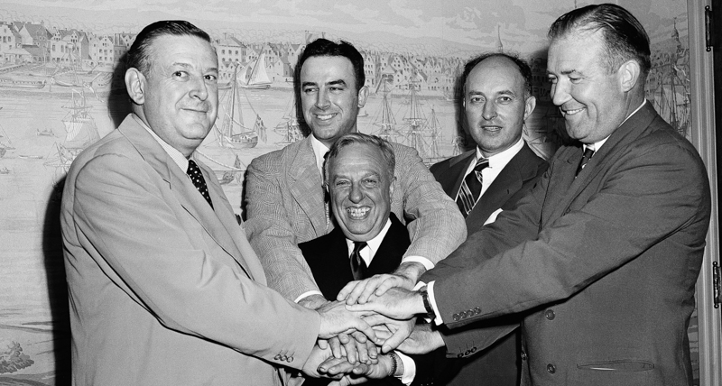

Com'è nata l'NBA ?
Il 3 agosto 1949, 75 anni fa, i rappresentanti delle due principali leghe professionistiche di basket degli Stati Uniti e del Canada si riunirono in un ufficio dell’Empire State Building,
a New York. Da quella riunione sarebbe nata la National Basketball Association (NBA),
uno dei campionati e dei brand sportivi più popolari del pianeta,
capace di costruire un seguito internazionale come pochi altri e di affermarsi come la più appassionante e competitiva lega di basket al mondo,
attirando progressivamente i migliori giocatori del pianeta.

I rappresentanti della National Basketball League e della Basketball Association of America dopo la firma della fusione, il 3 agosto 1949 a New York.
Come si è atrrivati alla nascita della NBA ?
Nel 1949, però, prevedere tutto ciò non era per niente scontato. Il basket era nato circa sessant’anni prima in una palestra del Massachusetts,
e da allora era diventato uno sport popolare in tutti gli Stati Uniti, dove pur non essendo ancora seguito come l’hockey o il baseball stava guadagnando sempre più appassionati.
Nei primi decenni del Novecento nacquero diversi campionati,
delle piccole o medie operazioni commerciali che riunivano squadre di una limitata area geografica, giocando perlopiù nelle palestre scolastiche e
senza un’organizzazione troppo meticolosa.
Le cose cominciarono a farsi più serie nel 1925, quando Joseph Carr,
il presidente della recentemente fondata National Football League (NFL) decise di creare una lega di basket più strutturata.
Nacque così l’American Basketball League (ABL),
radunando le migliori squadre dell’Est e del Midwest, che a quei tempi si chiamavano con nomi tipo Chicago Bruins, Washington Palace Five
In poco tempo la lega venne divisa in due gruppi, l’Est e l’Ovest, come succede oggi nella NBA, le cui migliori squadre
si affrontavano nei playoff nella fase finale del campionato.
L’ABL ebbe una storia molto più lunga di quella delle altre leghe nate negli anni precedenti, ma nel giro di qualche anno venne
soppiantata da altri campionati più popolari,
e avrebbe poi chiuso negli anni Cinquanta, quando tutta l’attenzione si era ormai spostata altrove.
Nel 1937, nel frattempo, era nata la National Basketball League (NBL),
fondata qualche anno prima con il nome di Midwest Basketball Conference, su iniziativa di grandi società americane
e dopo ancora Walter Brown un imprenditore del Massachusetts, decise di fondare nel 1946 un’ennesima lega di basket, questa volta però con aspirazioni maggiori.
Nacque così la Basketball Association of America (BAA), guidata da una serie di ricchi imprenditori e che non raccolse squadre particolarmente più forti delle altre due
leghe esistenti,
ma che da subito le fece giocare nelle grandi arene delle città principali dell’Est degli Stati Uniti.
La BAA aveva l’ambizione di diventare la più importante lega di basket degli Stati Uniti, ma aveva ancora un sacco di problemi: i palazzetti in cui si giocava erano quelli dell’hockey,
ma il sistema con cui si allestivano i diversi campi a seconda della serata era molto meno efficiente di quelli attuali. Nelle arene faceva un gran freddo,
e a volte il parquet era montato direttamente sul ghiaccio, col risultato che spesso si formavano grosse pozze durante le partite. Anche le regole erano ancora un po’ primitive,
e furono migliorate negli anni successivi per rendere il gioco più coinvolgente e meno statico.
Fu nell’estate tra la terza e la quarta stagione che la BAA e la NBL si fusero, unendo le dieci squadre della prima con le sei della seconda
(a cui se ne aggiunse una 17esima),
e formando una lega chiamata National Basketball Association (NBA).
Come viene vista questa storia oggi nell'NBA ?
Oggi la NBA definisce quella del 1949-50 come la sua quarta stagione, perché considera come sua origine la BAA: la versione ufficiale è
che quella del 3 agosto 1949 non fu una fusione, bensì una semplice espansione. Il primo titolo della NBA, in ogni caso, fu vinto dai Minneapolis Lakers.
Non ci volle molto prima che la NBA si affermasse come uno degli spettacoli sportivi più appassionanti e seguiti degli Stati Uniti, e a questo processo
contribuì soprattutto l’inizio dell’era delle grandi rivalità, inaugurata dai Lakers e dai Knicks all’inizio degli anni Cinquanta, proseguita dai
St. Louis Hawks e dai Celtics alla fine del decennio e poi consacrata negli anni Sessanta dai Lakers
– nel frattempo trasferitisi a Los Angeles – e dai Celtics, che si giocarono sei finali tra 1962 e il 1969.